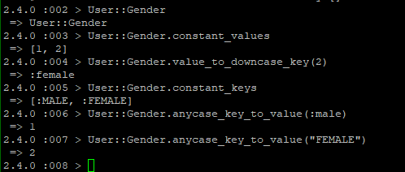

Untitled

以及，提醒一下，接口返回类型一类的东西（就是模型里头用integer表示，且设有Module的类型）时，应该尽量用字符串表示，接收的时候也是
具体这种Module怎么用，可以看下ConstantHelper
Untitled
hash
哈希（Hash）本质上就是数组，只不过它的索引不局限于只能使用数字。哈希的索引（或者叫“键”）几乎可以使用任何对象。例如，可以使用字符串做键
函数参数
常见参数有：必选参数，可选参数，带默认值的参数以及命名参数。
哈希作为参数
1 |
|
参数的默认值是一个空哈希，所以我们可以定义一个没有名字或没有电子邮件地址的用户。如果键不存在会返回nil，所以如果没定
键，attributes[:name]会返回nil。
命名参数
函数调用的每个参数定义一个专门的名称。
1 | def foo(str: "foo", num: 424242) |
想使用命名参数，但又不想提供默认值，即调用函数时必须传入该参数。
1 | def special(a:, b:2) |
1 | def mm (a, b=2, *c) |
函数返回值
Untitled
建立模型：
User
Relationship

两种关系：
主动关注
被动被关注
模型代码：
1 | class User < ApplicationRecord |
1 | class Relationship < ApplicationRecord |
以上代码建立的方法：
| 方法 | 作用 |
|---|---|
| active_relationship.follower | 获取关注我的用户 |
| active_relationship.followed | 获取我关注的用户 |
| user.active_relationships.create(followed_id: other_user.id) | 创建user 发起的主动关系 |
| user.active_relationships.create!(followed_id: other_user.id) | 创建user 发起的主动关系（失败时抛出异常） |
| user.active_relationships.build(followed_id: other_user.id) | 构建user 发起的主动关系对象 |
如何获取我关注（following)和关注我(followers)的账户
默认情况下，在has_many :through 关联中，Rails 会寻找关联名单数形式对应的外键。
1 | has_many :followeds, through: :active_relationships |
如果不是默认情况，Rails 允许定制的关联方法：使用source 参数指定following 数组由followed_id组成
1 | has_many :following, through: :active_relationships, source: :followed |
我们可以充分利用 Active Record 和数组的功能。例如，可以使用include? 方法检查我关注的用户中有没有某个用户，或者通过关联查找一个用户：
1 | user.following.include?(other_user) |
Untitled
SQLAlchemy
数据库连接
1 | from sqlalchemy import create_engine |
create_engine()返回一个Engine的实例，并且它表示通过数据库语法处理细节的核心接口，在这种情况下，数据库语法将会被解释称Python的类方法。
连接 echo参数为True时，会显示每条执行的sql语句。
1 | from sqlalchemy import Column |
declarative_base()
declarative_base() 创建了一个 BaseModel 类，这个类的子类可以自动与一个表关联。
以 User 类为例，它的__tablename__ 属性就是数据库中该表的名称，它有 id 和 name 这两个字段，分别为整型和 30 个定长字符。
最后，BaseModel.metadata.create_all(engine) 会找到 BaseModel 的所有子类，并在数据库中建立这些表；drop_all() 则是删除这些表。
Untitled
安装：
1 | $ sudo apt-get install mysql-server |
开始进入root用户的时候一定记得加sudo
1 | $ sudo mysql -u root -p |
常用指令：
1 | $ sudo service mysql start |
用户操作
操作之前首先要进入到mysql的终端下工作
1 | $ mysql -u <用户名> -p |
然后输入密码
创建用户
1 | CREATE USER <'用户名'@'主机号'> IDENTIFIED BY <'密码'>; |
- username：你将创建的用户名
- host：指定该用户在哪个主机上可以登陆，如果是本地用户可用localhost，如果想让该用户可以从任意远程主机登陆，可以使用通配符%
- password：该用户的登陆密码，密码可以为空，如果为空则该用户可以不需要密码登陆服务器
授权
1 | GRANT <权限名> ON <数据库名.表名> TO <'用户名'@'主机号'> |
- privileges：用户的操作权限，如SELECT，INSERT，UPDATE等，如果要授予所的权限则使用ALL
- databasename：数据库名
- tablename：表名，如果要授予该用户对所有数据库和表的相应操作权限则可用*表示，如*.*
更改用户密码
1 | SET PASSWORD FOR 'username'@'host' = PASSWORD('newpassword'); |
Untitled
https://blog.csdn.net/autoliuweijie/article/details/80701915
https://blog.csdn.net/lin_danny/article/details/82185023
开启ssh
https://blog.csdn.net/j790675692/article/details/52798953?utm_source=blogxgwz6
然后直接在pycharm的终端窗口开启调试：
python manage.py runserver 0.0.0.0:8000
不能直接runserver
1 | Invalid HTTP_HOST header: '192.168.163.140'. You may need to add '192.168.163.140' to ALLOWED_HOSTS. |
在settings.py
1 | ALLOWED_HOSTS = ['132.232.182.190'] |